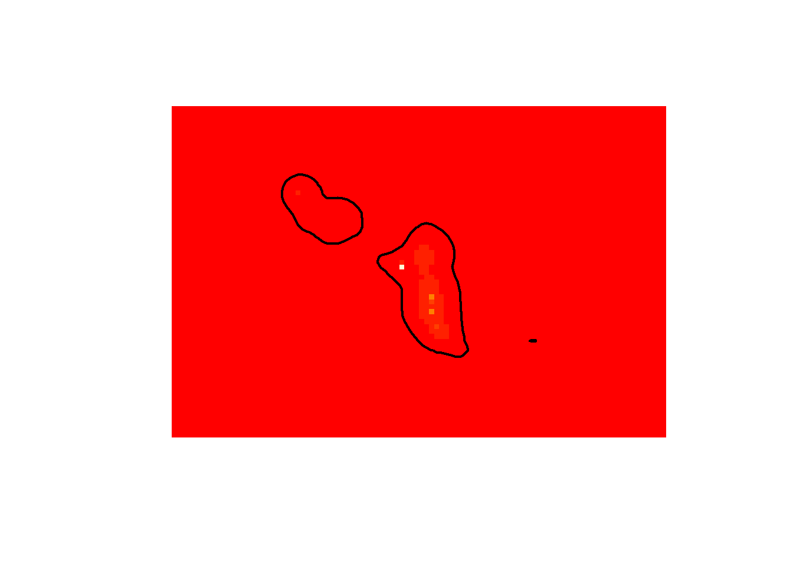
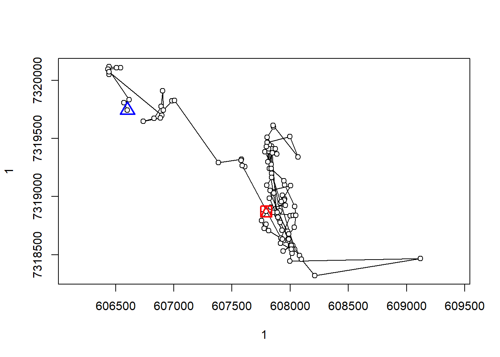
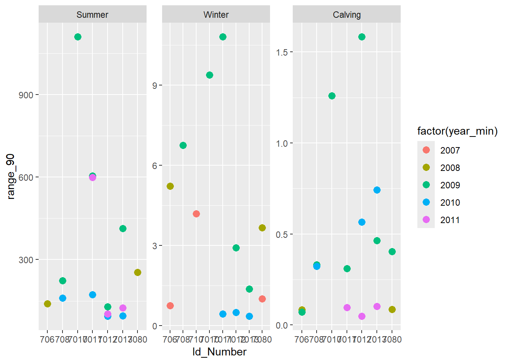
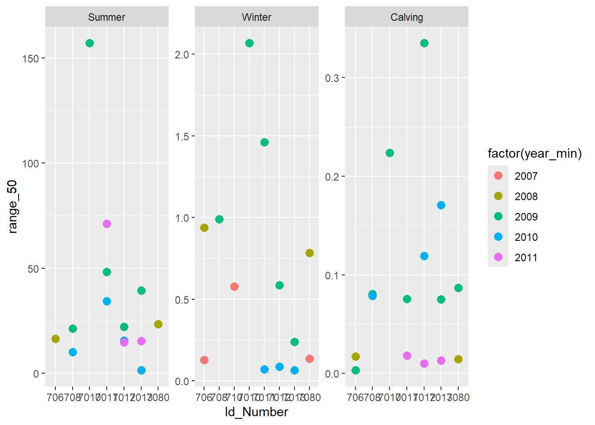

musk_collar_filt <- readRDS(here("data/processed/musk_collar_filt.rds"))
musk_season <- readRDS(here("data/processed/musk_season.rds"))
musk_collar_cal <- readRDS(here("data/processed/musk_collar_cal.rds"))Seasonal Range
Using Brownian Bridge Movement Model from the adehabitatHR package to estimate seasonal ranges for each muskoxen. Summer and winter are separated based on the presence of snow >0.1m deep for three consecutive days (see Movement Patterns).
musk_collar_seas <- musk_season %>%
mutate(date = as.Date(datetime),
year_min = ifelse(season=="Winter"&month<=5,year-1,year)) %>%
mutate(range_id = str_c(Id_Number,"_",year_min,"_",season)) %>%
group_by(range_id) %>%
filter(season == "Calving"&length(unique(date)) >= 30|
season == "Winter"&length(unique(date)) >= 60|
season == "Summer"&length(unique(date)) >= 90) %>%
ungroup() %>%
mutate(range_id = factor(range_id),
season = factor(season, levels = c("Summer", "Winter", "Calving"))) %>%
arrange(range_id)
musk_collar_seas %>%
sf::st_drop_geometry() %>%
group_by(Id_Number, year_min, season) %>%
summarise(days = length(unique(date))) %>%
pivot_wider(names_from = season, values_from = days) %>%
knitr::kable()`summarise()` has grouped output by 'Id_Number', 'year_min'. You can override
using the `.groups` argument.| Id_Number | year_min | Winter | Summer | Calving |
|---|---|---|---|---|
| 706 | 2007 | 115 | NA | NA |
| 706 | 2008 | 156 | 158 | 33 |
| 706 | 2009 | NA | NA | 31 |
| 708 | 2009 | 147 | 165 | 38 |
| 708 | 2010 | NA | 169 | 36 |
| 710 | 2007 | 67 | NA | NA |
| 7010 | 2009 | 79 | 124 | 43 |
| 7011 | 2009 | 91 | 202 | 33 |
| 7011 | 2010 | 138 | 199 | NA |
| 7011 | 2011 | NA | 128 | 50 |
| 7012 | 2009 | 162 | 155 | 49 |
| 7012 | 2010 | 106 | 205 | 33 |
| 7012 | 2011 | NA | 154 | 53 |
| 7013 | 2009 | 160 | 153 | 50 |
| 7013 | 2010 | 124 | 199 | 40 |
| 7013 | 2011 | NA | 95 | 51 |
| 7080 | 2007 | 117 | NA | NA |
| 7080 | 2008 | 147 | 149 | 39 |
| 7080 | 2009 | NA | NA | 39 |
Number of locations for each muskox-season combination.
xy <- musk_collar_seas %>%
sf::st_transform("+proj=utm +zone=9") %>%
sf::st_coordinates()
musk_ltraj <- adehabitatLT::as.ltraj(xy = xy, date = musk_collar_seas$datetime, id = musk_collar_seas$range_id)First step is to determine GPS accuracy using stationary GPS data. We can use data from collar 707 as this collar was confirmed to have released early. We will calculate the standard deviation of the euclidean distances to estimate GPS accuracy. This will be used as sig2 to help fit our movement models.
We can then fit movement models for each muskox for each season and estimate utilization distributions. From these distributions we can compare size and overlap between seasons, years, and muskoxen.
Below we plot an example seasonal range as well as a comparison between 90% seasonal ranges and 50% core seasonal ranges for each season.
sig2 <- musk_collar_cal %>%
sf::st_transform("+proj=utm +zone=9") %>%
filter(Id_Number == 707) %>%
mutate(x = sf::st_coordinates(geometry)[,1],
y = sf::st_coordinates(geometry)[,2]) %>%
st_drop_geometry() %>%
group_by(Id_Number) %>%
### calculate distances to estimate euclidean standard deviation (telemetry error)
mutate(mean_x = mean(x),
mean_y = mean(y),
distance = sqrt((x-mean_x)^2+(y-mean_y)^2)) %>%
summarise(sd = sd(distance)) %>%
pull(sd) %>%
mean()
sig1 <- liker(musk_ltraj,
sig2 = sig2,
rangesig1 = c(0.1,20),
plotit = FALSE)
# bbox <- musk_collar_seas %>%
# sf::st_transform("+proj=utm +zone=9") %>%
# mutate(x = sf::st_coordinates(geometry)[,1],
# y = sf::st_coordinates(geometry)[,2]) %>%
# st_drop_geometry() %>%
# group_by(range_id) %>%
# summarise(xmin = min(x),
# xmax = max(x),
# ymin = min(y),
# ymax = max(y))
#
# sp_pixels = list()
# for(i in 1:nrow(bbox)){
# coords <- expand.grid(x = seq(bbox$xmin[i]-50,bbox$xmax[i]+10,100),
# y = seq(bbox$ymin[i]-10,bbox$ymax[i]+10,100))
# sf_points <- st_as_sf(coords, coords = c("x", "y"), crs = "+proj=utm +zone=9")
# sp_points <- as(sf_points, "Spatial")
# sp_pixels[[i]] <- SpatialPixels(sp_points)
# }
musk_bb <- list()
for(i in 1:length(sig1)){
musk_bb[[i]] <- kernelbb(musk_ltraj[i],
sig1 = sig1[[i]]$sig1,
sig2 = sig2,
grid=100)
}
image(musk_bb[[1]]);plot(getverticeshr(musk_bb[[1]], 95), add=TRUE, lwd=2)
plot(musk_ltraj[1])
kernel.area(musk_bb[[1]],percent = c(50,95),unout = "km2") 50 95
0.2236285 1.2593816 musk_seasrange <- map(musk_bb, function(x){kernel.area(x,percent = c(50,95),unout = "km2") %>% as_tibble_row()}) %>%
list_rbind() %>%
set_names(c("range_50", "range_90")) %>%
mutate(range_id = unique(musk_collar_seas$range_id)) %>%
left_join(musk_collar_seas %>%
sf::st_drop_geometry() %>%
dplyr::select(range_id,Id_Number,year_min,season) %>%
distinct())Joining with `by = join_by(range_id)`musk_seasrange %>%
ggplot(aes(x = Id_Number, y = range_90, colour = factor(year_min))) +
geom_point(size = 3) +
facet_wrap(~season, scales = "free")
musk_seasrange %>%
ggplot(aes(x = Id_Number, y = range_50, colour = factor(year_min))) +
geom_point(size = 3) +
facet_wrap(~season, scales = "free")